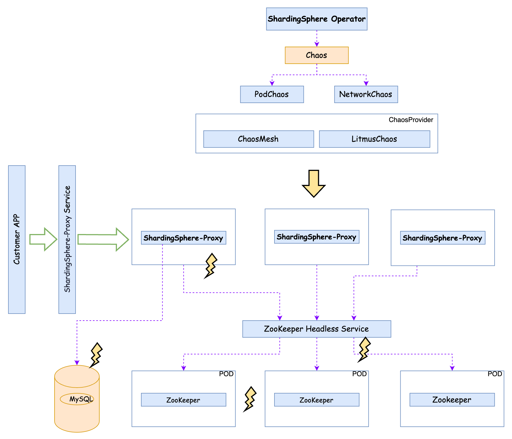

为了实现自动化的混沌测试，ShardingSphere Operator 支持名为 Chaos 的 CRD，并根据其中配置的混沌类型和相关参数，生成对应的混沌平台 CRD 配置并执行测试。目前 Chaos 支持 ChaosMesh，下一步计划支持 LitmusChaos。基本示意如图：

使用 Chaos 依赖于 ShardingSphere Operator，部署方式请参考“ShardingSphere Operator 用户手册”中的“安装 Operator”章节。
目前 Operator 想要使用 Chaos 需要打开相应的 FeatureGate：
helm install [RELEASE_NAME] shardingsphere/apache-shardingsphere-operator-charts --set operator.featureGates.chaos=true
| 配置项 | 描述 | 类型 | 示例 |
|---|---|---|---|
metadata.name |
计划部署的名称 | string | foo |
metadata.namespace |
计划部署的命名空间，默认为 default | string |
| 配置项 | 描述 | 类型 | 示例 |
|---|---|---|---|
spec.podChaos.selector.namespaces |
Pod 选择器：命名空间 | []string | |
spec.podChaos.selector.labelSelectors |
Pod 选择器：标签 | map[string]string | |
spec.podChaos.selector.annotationSelectors |
Pod 选择器：注解 | map[string]string | |
spec.podChaos.selector.nodes |
Pod 选择器：节点 | []string | |
spec.podChaos.selector.pods |
Pod 选择器：Pod | map[string][]string | |
spec.podChaos.selector.nodeSelectors |
Pod 选择器：节点选择器 | map[string]string | |
spec.podChaos.selector.expressionSelectors |
Pod 选择器：表达式选择器 | []metav1.LabelSelectorRequirement | |
spec.podChaos.action |
PodChaos 类型，包括 PodFailure、ContainerKill、PodKill、CPUStress、MemoryStress | PodChaosAction | PodFailure |
spec.podChaos.params.podFailure.duration |
PodFailure 持续时间 | string | 1m |
spec.podChaos.params.containerKill.containerNames |
ContainerKill 作用的目标容器名称 | []string | shardingsphere-proxy |
spec.podChaos.params.podKill.gracePeriod |
PodKill 优雅停止时间 | number | 0 |
spec.podChaos.params.cpuStress.duration |
CPU 压力持续时间 | string | 1m |
spec.podChaos.params.cpuStress.cores |
CPU 压力核心数 | number | 2 |
spec.podChaos.params.cpuStress.load |
CPU 压力负载比重 | number | 50 |
spec.podChaos.params.memoryStress.duration |
内存压力持续压力 | string | 1m |
spec.podChaos.params.memoryStress.workers |
内存压力并发度 | numbers | 2 |
spec.podChaos.params.memoryStress.consumption |
内存压力消耗比重 | string | 50 |
spec.networkChaos.source.namespaces |
Pod 选择器：命名空间 | []string | |
spec.networkChaos.soruce.labelSelectors |
Pod 选择器：标签 | map[string]string | |
spec.networkChaos.source.annotationSelectors |
Pod 选择器：注解 | map[string]string | |
spec.networkChaos.source.nodes |
Pod 选择器：节点 | []string | |
spec.networkChaos.source.pods |
Pod 选择器：Pod | map[string][]string | |
spec.networkChaos.source.nodeSelectors |
Pod 选择器：节点选择器 | map[string]string | |
spec.networkChaos.source.expressionSelectors |
Pod 选择器：表达式选择器 | []metav1.LabelSelectorRequirement | |
spec.networkChaos.target.namespaces |
Pod 选择器：命名空间 | []string | |
spec.networkChaos.target.labelSelectors |
Pod 选择器：标签 | map[string]string | |
spec.networkChaos.target.annotationSelectors |
Pod 选择器：注解 | map[string]string | |
spec.networkChaos.target.nodes |
Pod 选择器：节点 | []string | |
spec.networkChaos.target.pods |
Pod 选择器：Pod | map[string][]string | |
spec.networkChaos.target.nodeSelectors |
Pod 选择器：节点选择器 | map[string]string | |
spec.networkChaos.target.expressionSelectors |
Pod 选择器：表达式选择器 | []metav1.LabelSelectorRequirement | |
spec.networkChaos.action. |
NetworkChaos 类型，包括 Delay，Loss，Duplication，Corruption，Partition，Bandwidth | string | 50 |
spec.networkChaos.duration. |
持续时间 | string | 1m |
spec.networkChaos.direction. |
流量方向，包括 to、from 和 both | string | both |
spec.networkChaos.params.deplay.latency |
延迟时间 | string | 100 |
spec.networkChaos.params.loss.loss |
丢包率 | string | 80 |
spec.networkChaos.params.duplicate.duplicate |
包重复 | string | 80 |
spec.networkChaos.params.corrupt.corrupt |
包错误 | string | 80 |
在使用 PodChaos 和 NetworkChaos 的时候，根据不同的平台，有的参数需要配合一些特殊的 Annotations 进行配置，如：
以下是一个 CPU Stress 对应的 PodChaos 配置说明：
apiVersion: shardingsphere.apache.org/v1alpha1
kind: Chaos
metadata:
name: cpu-chaos
annotations:
selector.chaos-mesh.org/mode: one
spec:
podChaos:
selector:
labelSelectors:
app: foo
namespaces:
- "default"
params:
cpuStress:
duration: 1m
cores: 2
load: 50
action: "CPUStress"